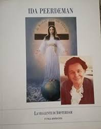
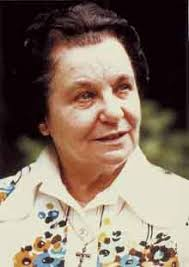
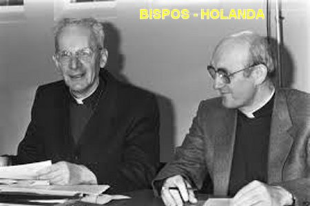
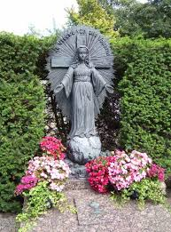
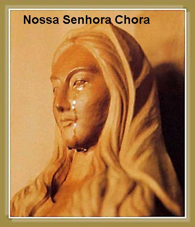

“A VIRGEM QUER O DOGMA”
NOSSA MÃE SANTÍSSIMA EXPLICA

Em Fevereiro de 1952, a vidente senhora Ida revelou: “A SENHORA” apareceu novamente bem perto de mim, e disse: “Diga ao mundo que à hora chegou. O mundo deve saber que EU vim como A SENHORA DE TODAS AS NAÇÕES. Por isso mesmo, desejo que Minhas Palavras cheguem ao Papa, pois estas palavras são para ele. É como Co-Redentora e Medianeira que EU venho. Diga aos teólogos e ao povo para interpretar bem a Minha mensagem objetivando compreendê-la. O SENHOR JESUS CRISTO trouxe a Igreja e a Cruz como um dom de NOSSO SENHOR e CRIADOR. A Igreja é, e continua ser a Mesma. NOSSO SENHOR deseja a gratidão das criaturas. A Igreja é a Comunidade dos Povos, que devem adorar e honrar NOSSO SENHOR e CRIADOR, o PAI, o FILHO e o ESPÍRITO SANTO. Todos que pertencem a uma Comunidade devem fazer com que a Igreja permaneça e cresça”.
Em Março de 1953 NOSSA SENHORA disse: “À hora chegou... O mundo deve saber que EU vim como A SENHORA DE TODAS AS NAÇÕES, com o objetivo de ajudar o mundo a crescer e a se desenvolver, segundo a Vontade de DEUS”.
NOSSA SENHORA explica e insiste: “O mundo não será salvo pela força, mas pelo ESPÍRITO. Por isso mesmo, Todos devem rezar aquela Oração, que é uma prece de suplica ao ESPÍRITO. Asseguro-lhe que o mundo vai mudar. Façam a Minha Oração para que o ESPÍRITO SANTO realmente venha”.
CO-REDEMTORA E MEDIANEIRA
“Eu vim ao mundo como Co-Redentora e Medianeira. Fui Co-Redentora a partir do momento em que o Arcanjo Gabriel fez a “Anunciação”. Como a “Anunciação” foi uma determinação da “Vontade do PAI ETERNO”, significa: a MÃE foi constituída Co-Redentora, pela suprema Vontade do PAI ETERNO. Diga aos teólogos que esse é o dogma”.
ANUNCIANDO A VINDA DO ESPÍRITO SANTO
Entre 31 de Maio de 1954 a 31 de Maio de 1959, ocorreu à terceira fase das Aparições. Mais tarde, a data de 31 de Maio se tornou associada à Festa da “SENHORA DE TODAS AS NAÇÕES”. Em 31 de Maio de 1954 o Papa Pio XII estabeleceu a Festa da “RAINHA MARIA” ou também denominada de “NOSSA SENHORA RAINHA”. Mas desde 1969 a data permaneceu reservada a “Visitação de MARIA a Sua Prima Isabel”. Aconteceram somente sete Aparições nesta fase. Em 31 de Maio de 1955 a VIRGEM MARIA confirmou: “Vim para expulsar Satanás e anunciar a vinda do ESPÍRITO SANTO em plenitude. Por isso rezem com frequência a Oração que lhes ensinei”.

Em 19 de Fevereiro de 1959, NOSSA SENHORA predisse a data de falecimento do Papa Pio XII (em Outubro). Nesta terceira fase também aconteceu uma notável experiência da senhora Ida na Sagrada Eucaristia, durante a Santa Missa. E concluindo o ciclo das Aparições, no dia 31 de Maio de 1959, praticamente encerrou as visitas da “SENHORA DE TODOS OS POVOS”. Todavia, desta data até 1980 e 1982, a senhora Ida ainda teve algumas experiências espirituais, ouvindo a voz de NOSSA SENHORA com mensagens ocasionais.
As Aparições e Mensagens de NOSSA SENHORA oficialmente terminaram no dia 31 de Maio de 1959. Na última Aparição ocorrida na data mencionada, Ida teve a visão de uma linda e grande Hóstia Consagrada, da qual espargia uma grande quantidade de luz, enquanto uma voz dizia:“Quem ME Come e Bebe tem Vida Eterna e recebe o verdadeiro ESPÍRITO SANTO”.
PEQUENAS EXPERIÊNCIAS
Na realidade, porém, essa não foi à última experiência mística da senhora Ida. Tempos depois, ela teve visões de JESUS e mensagens curtas que foram enviadas por ELE. Durante 25 anos ela teve “pequenas experiências místicas” , em que a maioria delas aconteceu na Capela durante a Sagrada Comunhão. Esta realidade se estendeu até o ano 1984.
A vidente Ida foi também, ao longo dos anos, desde a juventude até os últimos anos de vida, alvo de numerosos e abomináveis ataques demoníacos. Suportou tudo pacientemente, sendo absolutamente fiel a missão que a SANTÍSSIMA VIRGEM MARIA havia lhe anunciado.
A senhora ISLE (Ida) JOHANNA PEERDEMAN ao longo da sua existência sempre aceitou pacientemente a dor de ser ridicularizada por pessoas, também através dos meios de comunicação, inclusive chamando-a de louca. Ela se mantinha silenciosa, sem qualquer tipo de reação, revelando-se completamente indiferente a aquelas calunias e críticas. Nem mesmo os amigos e parentes perceberam o martírio físico e espiritual que durante anos, ela suportou silenciosamente, sem nenhuma revolta ou reclamação.
VENERAÇÃO PÚBLICA A SENHORA DE TODAS AS NAÇÕES
A senhora Ida adoeceu com câncer
de mama, mas devido ao seu grande medo de Hospitais, passou por uma cirurgia nos
últimos anos de vida. Também sofria do

NOSSA SENHORA prometeu à senhora Ida que ela não iria morrer antes de ver a veneração publica de mais um precioso titulo: "A SENHORA DE TODAS AS NAÇÕES (OU DE TODOS OS POVOS)”. E de fato assim aconteceu. No dia 31 de Maio de 1996, o senhor Bispo de Amsterdam na Holanda, Dom Henrik Bomers e o seu Bispo Auxiliar Dom Josef Punt, aprovaram oficialmente a veneração da MÃE DE DEUS sob o titulo de “SENHORA DE TODAS AS NAÇÕES (OU DE TODOS OS POVOS)”.
Na verdade, desde o dia 1º de Janeiro de 1996, que Ida sabia que sua morte ia ocorrer naquele ano. Ela estava rezando o Rosário, quando a voz de NOSSA SENHORA lhe revelou essa verdade: “Este é o seu último ano. Em breve vou levá-la ao MEU FILHO. Sua tarefa está concluída! Continue ouvindo MINHA voz!”
FUNDAÇÃO SENHORA DE TODOS OS POVOS
Na década de 70, a Fundação “SENHORA DE TODOS OS POVOS” tomou posse de um grande terreno em Diepenbrockstraat, a um preço praticamente simbólico. No terreno foi construída uma Capela em honra da “SENHORA DE TODOS OS POVOS (OU DE TODAS AS NAÇÕES)”, e ao lado uma Secretaria. No Altar da Capela está uma bonita pintura da “SENHORA DE TODOS OS POVOS (OU DE TODAS AS NAÇÕES)”. Nesse local, a senhora Ida Peerddeman passou os últimos anos da sua vida. Ao longo da sua existência, inclusive nos últimos anos, sofreu muitas críticas, a maioria absurdas e covardes, inclusive com as sistemáticas recusas das autoridades, que não acreditavam nas palavras dela. Já perto do fim, nos últimos meses de vida, a senhora Ida já não suportava mais nada, e até queria desaparecer, pois eram poucas as autoridades que concediam crédito às suas palavras. Até que finalmente Sua Excia. Reverendíssima Bispo Haarlem junto com seu Bispo Auxiliar, Bispo Punt autorizou o culto público da “SENHORA DE TODOS OS POVOS”, permitindo as pessoas crerem e a manifestarem sua experiência de crença nas Mensagens da "MÃE DE DEUS".
. 
A senhora Ida finalmente se alegrou e com muito prazer se manifestou: “Agora posso morrer em paz”. E isto verdadeiramente aconteceu no dia 17 de Junho de 1996 com quase completos 91 anos de idade. Na última Aparição NOSSA SENHORA lhe disse: “Adeus, vejo você no Céu”. O senhor Bispo Bomers determinou que o funeral da senhora Ida fosse realizado na Capela da “SENHORA DE TODOS OS POVOS”. Também, o senhor Bispo autorizou oficialmente a veneração pública da MÃE DE DEUS sob o titulo da “SENHORA DE TODAS AS NAÇÕES (OU DE TODOS OS POVOS)”, e também deu a autorização “nihil obstat” sobre todas as mensagens de NOSSA SENHORA recebidas pela senhora Ida. Em 31 de Maio de 2002, o senhor Bispo Josef Marianus Punt de Haarlem, concluiu o período de investigação declarando oficialmente: “São reconhecidas as Aparições presenciadas pela senhora ISLE (Ida) JOHANNA PEERDEMAN como de origem sobrenatural”.
APÓS O RECONHECIMENTO OFICIAL DAS APARIÇÕES
A devoção foi cultivada com
grande amor em muitas Nações, surgindo uma quantidade notável de imagens da
“SENHORA DE TODAS AS NAÇÕES (OU DE TODOS OS POVOS)”
, cada uma mais bonita que a outra, em todas as partes
de planeta. É assim que também surgiram no comercio Japonês em diversas cidades, imagens da
“MÃE DE DEUS”, referentes à nova devoção oficialmente autorizada. Uma imagem muito bonita possuía o
Convento do Instituto das Servas da Eucaristia no Japão, pertencente à Diocese de AKITA, Convento
construído no alto de uma colina distante da cidade. A Capela do Convento possui uma linda imagem
da “SENHORA DE TODOS OS POVOS”
que no ano de 1981, nos meses de Julho a Setembro,
derramou preciosas e sentidas lágrimas com poucas paralisações, durante 101
dias. O acontecimento extraordinário e admirável, atraiu a atenção do mundo,
pois foi presenciado pelos cristãos, por organizações religiosas que filmaram
minuciosamente, pelos técnicos de laboratórios especializados
que colheram as lágrimas várias vezes para exames, e por muitas 
ELA estava derramando sentidas e doloridas lágrimas, porque a humanidade é cruel, não atende as suplicas das orações que ELA faz, continuando a viver de maneira egoísta, vaidosa e audaciosa, afastando-se cada vez mais de DEUS. Ali ELA manifestava claramente, que não cabe no SAGRADO CORAÇÃO e na SANTA MENTE de NOSSA MÃE SANTÍSSIMA, aceitar que os seus filhos queridos fechassem os olhos ao DEUS DA VIDA e caminhássemos na prática do mal, sorrindo para satanás e seus asseclas!...
ELA chorava de verdade... Chorava porque deseja o nosso amor, a nossa fidelidade, porque deseja para todos nós uma vivência honesta, fervorosamente dedicada ao amor DIVINO, exercitando com respeito e dignidade o direito alheio, e cultivando uma vivência fraterna, harmoniosa e responsável, abrindo espaço sincero e fiel para uma plena dedicação ao SENHOR DEUS NOSSO CRIADOR.
E porque muitos da humanidade são frios e indiferentes, NOSSA MÃE SANTÍSSIMA, A SENHORA DE TODOS OS POVOS, derramava as suas preciosas e sentidas lágrimas em Akita, e em outros locais do mundo, numa profunda demonstração de tristeza, tentando fazer a humanidade compreender o amor supremo e a verdade da vida.